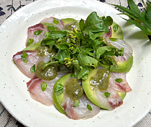

真鯛とアボカドのカルパッチョ
- 調理時間： 20分
- （一人当たり）
- カロリー：254kcal
- たんぱく質：18.0g
- 脂質：15.8g
- 炭水化物：9.6g
- 塩分：0.6g


＜2人分＞ ※山椒みそは作りやすい分量
- タイ（刺身用）
- 150g
- アボカド
- 1/2個
- 山椒の葉
- 30～50枚
- ルッコラ（飾り用）
- お好みで
- ・白みそ
- 100g
- ・砂糖
- 50g
- ・みりん
- 大さじ1
- ・ゆず果汁
- 大さじ1
A


- 【山椒みそをつくる】
山椒の葉はフードカッターで細かくペースト状にする（すり鉢ですりおろしてもよい）鍋にAの白みそ、砂糖、みりんを加えて火にかけ、練り上げる。
砂糖がしっかり溶けたら、山椒ペースト、ゆず果汁を加えてよく混ぜる。 - アボカドは皮をむき、種を取り出し、タイの大きさに揃えて切り分ける。
※レモン汁（分量外）をかけると変色を防げます - お皿にタイとアボカドを並べ、山椒みそを添えて完成。お好みでルッコラを飾る
真鯛とアボカドのカルパッチョ
健康のために意識的に摂取したい脂肪酸があることをご存知ですか？例えば、魚油に含まれるDHAやEPA。DHAは脳の材料となりますし、EPAは血管のメンテナンスをし、中性脂肪を下げる医学的な効果が認められています。
アボカドに含まれるオレイン酸は、オリーブオイルに含まれる脂肪酸と同じ種類です。コレステロール値によい影響を与えるため、心疾患のリスクを低下させるといわれています。